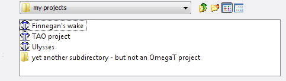
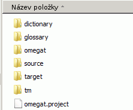

OmegaT Soubory a adresáře
OmegaT pracuje se třemi typy souborů.
- Soubory projektu překladu: Představují projekt překladu. Jejich ztráta může ovlivnit celistvost projektu a možnost dokončit danou práci. Soubory projektu jsou nejdůležitějšími soubory v programu OmegaT. Jsou to soubory, které představují základ vašeho překladu.
- Jsou vytvořeny, když uživatel pozmění chování programu OmegaT prostřednictvím nastavení dostupných voleb. Jejich ztráta znamená, že budete pracovat s programem OmegaT v jeho „továrním“ nastavení. Pokud změníte nastavení když zrovna překládáte, může to někdy zapříčinit menší problémy.
- Soubory Aplikace: Jsou obsaženy v balíku, který jste si stáhli, většina z nich je nezbytná pro správné fungování programu OmegaT. Pokud jsou z nějakého důvodu takovéto soubory ztraceny, jednoduše si stáhněte a/nebo přeinstalujte program OmegaT, a tím budou všechny tyto soubory obnoveny.
Soubory překladového projektu
Překladový projekt programu OmegaT zahrnuje množství souborů a adresářů.
Umístění souborů překladového projektu.
Když vytvoříte překladový projekt, OmegaT automaticky vytvoří seznam adresářů, které později poslouží jako úložiště souborů, stejně tak i soubory, které se použijí pro nastavení některých voleb projektu a udržení paměti překladu projektu. Při výchozím nastavení jsou všechny adresáře překladového projektu seskupeny v hlavním adresáři projektu. Při vytváření projektu nebo během překladu si můžete vybrat alternativní umístění pro adresáře Takto je možné vybrat existující adresáře nebo vytvořit adresáře v umístění, které vyhovuje vašim pracovním zvyklostem. Pokud chcete změnit umístění adresářů po té, co byl projekt vytvořen, otevřete Projekt → Vlastnosti... a proveďte nutné změny.
Seznam souborů překladového projektu.
V dialogovém okně programu OmegaT vypadá překladový projekt jako soubor opatřený ikonou asociovanou k programu OmegaT. Při pohledu přes správce souborů vypadá ten stejný překladový projekt jako jakýkoliv jiný adresář.

Vybráním položky s ikonou OmegaT otevřete projekt. Překladový projekt Example_Project vytvořený přes výchozí nastavení bude vytvořen jako nový podadresář s následující strukturou:

Zpočátku budou všechny podadresáře projektu prázdné.
Omegat
- Podadresář omegat může popřípadě obsahovat několik souborů, nejdůležitější mezi nimi je soubor s překladovou pamětí project_save.tmx (...). Soubor project_save.tmx představuje pracovní překladovou paměť projektu. Pokud máte aktivovanou funkci automatického ukládání, bude soubor při ukončení práce automaticky aktualizován. Je to překladová paměť používaná k vytvoření přeložených souborů. Hned několik souborů TMX se jmény typu project_save.tmx.<datum a čas>.bak (...) se bude postupně přidávat do tohoto podadresáře. Slouží jako záloha překladové paměti projektu a přidávají se sem při každém opětovném spuštění projektu, to znamená, že se v nich ukládá obsah projektu před tím, než bude projekt v dané relaci upraven.
- Soubor stats.txt (...) obsahuje statistiky o současném projektu a může být otevřen ve vybraném tabulkovém procesoru, kde pak můžete vyčíst informace o počtu segmentů a slov. Obsažená informace je detailnější než ta, která je zobrazená v okně Soubory projektu. Soubory ignored_words.txt (ignorovaná slova) a learned_words.txt (přidaná/naučená slova), pokud tedy existují, budou použity při kontrole pravopisu.
Adresář Source / Zdroj
- Podadresář zdroje (source) je místem pro soubory, které budou překládány. Můžete specifikovat nový podadresář a do projektu přidat další soubory později. Za povšimnutí stojí, že uspořádání zdrojového podadresáře máte plně ve svých rukou. Pokud jsou soubory, které budete překládat, součástí stromové struktury, vše co musíte udělat je určit nejvyšší podadresář a OmegaT zkopíruje veškerý obsah, a stromová struktura zůstane zachována.
Adresář Target / Cíl
- Když vyberete Projekt → Vytvořit přeložené dokumenty a současně je otevřen jiný projekt, všechny soubory v /source/, ať už přeložené nebo ne, tu budou znovu vytvořeny se stejnou adresářovou strukturou, a zobrazí tak aktuální stav překladu. Prakticky to znamená, že OmegaT sloučí informaci o překladu uloženou v /omegat/project_save.tmx se zdrojovými dokumenty, aby vytvořila obsah /target/.
Adresář Tm / Překladová paměť
- Do tohoto podadresáře můžete ukládat překladové paměti z předešlých překladů. Musí být ve formátu tmx. Můžete použít dostupné nástroje pro transformaci z jiných formátů. Mějte na paměti, že soubor project_save.tmx představuje překladovou paměť, která stojí uprostřed mezi zdrojem a eventuálním cílem. Nicméně pomocné soubory překladových pamětí slouží k nalezení nejvhodnějších návrhů pro překlad nepřeložených segmentů.
omegat.project
- OmegaT vytvoří tento soubor automaticky jakmile je vytvořen projekt. Obsahuje parametry projektu. Parametry, které jsou obsaženy v tomto souboru mohou být změněny z okna Vlastnosti projektu.
- nazev_projektu-omega.tmx(...)
nazev_projektu-level1.tmx
nazev_projektu-level2.tmx
- Tyto soubory obsahují zdrojové a cílové segmenty v souladu s obsahem adresáře /source/ a to v momentu jejich vytvoření (obvykle když se vytvoří přeložené dokumenty).
Soubory uživatele
Umístění souborů uživatele
Uživatelské soubory jsou uloženy v odděleném umístění, kde k nim lze přistupovat s jakoukoliv verzí programu OmegaT. Umístění záleží na platformě, kterou používáte:
|
Pod Windows:
|
- 2000 a XP: Dokumenty a nastavení\<Jméno uživatele>\Data aplikací\OmegaT
- Vista: Users\<Jméno uživatele>\AppData\Roaming\OmegaT
- Ostatní: <Něco...>\OmegaT (<Něco...> odpovídá umístění výchozí domovské složky(„home“), která je určena Javou.)
|
- Linux/Solaris/FreeBSD
|
- <User Home>/.omegat (.omegat je adresář, tečka před názvem znamená, že je neviditelný dokud nenapíšete
ls -a nebo odpovídající příkaz.)
|
- MacOSX
|
- <User
Home>/Library/Preferences/OmegaT
|
- Other
|
- <Home uživatele>
|
Seznam souborů uživatele
- log.txt
|
- Tento soubor zaznamenává chybová hlášení Javy během chodu OmegaT. Pokud myslíte, že se OmegaT chová jinak než má, pak je důležité tento soubor nebo daný podstatný úsek zahrnout do chybového hlášení.
|
- omegat.prefs
|
- Soubor xml se všemi dostupnými nastaveními možností GUI (grafické uživatelské rozhraní), stejně jako data pozice okna.
|
- filters.conf
|
- Soubor xml se všemi daty nastavenými ve volbách Filtrů souboru.
|
- segmentation.conf
|
- Soubor xml se všemi daty nastavenými ve volbách Filtrů souboru.
|
Soubory aplikace
OmegaT je k dispozici jako balík, který je možno stahovat ze SourceForge. V této kapitole se budeme zabývat balíkem nezávislým na platformě, který obsahuje aplikaci ve standardní formě Java. Ostatní balíky obsahují Linuxový balík .tar, instalace Windows - buď s, nebo bez prostředí Java Runtime Environment, instalace pro MacOSX a balík se zdrojovým kódem pro vývojáře. Balík, který není závislý na platformě, lze používat na jakékoliv platformě s funkčním prostředím Java 1.4.2, včetně platforem, pro které existuje specifický balík. Tento balík, který je nezávislý na platformě, je k dispozici jako komprimovaný soubor, který je nutno rozbalit do libovolného adresáře pro instalaci. Dekomprese se obvykle provede dvojitým kliknutím na stažený balík. Po rozbalení bude vytvořen adresář obsahující následující soubory:
|
Soubor/
podadresář
|
Obsah
|
| /docs/ |
- V tomto adresáři jsou všechny soubory uživatelské příručky. Pokud chcete přistupovat k externím odkazům, otevřete vybraný soubor v internetovém prohlížeči.
|
- /images/
|
- Zde jsou obsaženy ikony a logo.
|
- /lib/
|
- Zde se nacházejí soubory Java. Ty jsou nezbytné pro správný běh programu OmegaT.
|
- join.html
|
- Toto je běžný html soubor, který vás po otevření v internetovém prohlížeči přesměruje na uživatelskou skupinu OmegaT, která je nabízena v rámci služby Yahoo! Groups. Registrace do uživatelské skupiny není nutná, ale zpřístupní vám některé extra služby jako přístup k některým souborům, nepravidelné průzkumy mínění, nebo také možnost připojit se k diskusím na téma aplikace OmegaT. Archívy skupiny jsou veřejné a pro rešerši se nemusíte do skupiny registrovat.
|
- changes.txt
|
- Poměrně detailní seznam modifikací mezi touto verzí a verzemi předchozími.
|
- license.txt
|
- Licence GNU General Public License. Tato licence vám povoluje provádět určité věci s programem OmegaT, včetně jeho úprav a distribuce. Pokud máte zájem o úpravy nebo distribuci programu OmegaT, dobře si projděte tento dokument a ujistěte se, že jste si vědomi všech možných důsledků dříve, než cokoliv učiníte. Jestli máte nějaké pochybnosti, tak se neváhejte zeptat členů projektu přímo, buď jim zašlete email ze stránky Source Forge, nebo pošlete veřejný email do uživatelské skupiny.
|
- doc-license.txt
|
- Licence GNU General Public License. Tato licence zastřešuje dokumentaci. Vizte výše.
|
- readme.txt
|
- Tento soubor je velmi důležitý a určitě byste si jej měli přečíst před startem OmegaT. Obsahuje obecné informace o programu OmegaT, kde naleznete více informací, jak přispět atd. Je přeložen do mnoha jazyků.
|
- O aplikaci OmegaT
|
- Textový soubor, který obsahuje dva řádky:
#!/bin/bash
java -jar OmegaT.jar $*
Tento soubor bude pro vás užitečný, pokud změníte práva pro „execute“ (chmod +x OmegaT) z příkazového řádku, musíte být přitom v adresáři /OmegaT_1.8/. Od této chvíle můžete spouštět program OmegaT přes příkazový řádek.
|
- OmegaT.bat
|
- Dávkový soubor, který se používá pro spouštění programu OmegaT z příkazového řádku pod Windows. Obsahuje pouze následující řádek:
java -jar OmegaT.jar %*
|
- OmegaT.jar
|
- Samotná aplikace OmegaT. Pro spuštění OmegaT budete muset buď spustit tento soubor z příkazového řádku, nebo z vašeho správce souborů (obvykle dvojitým kliknutím).
|